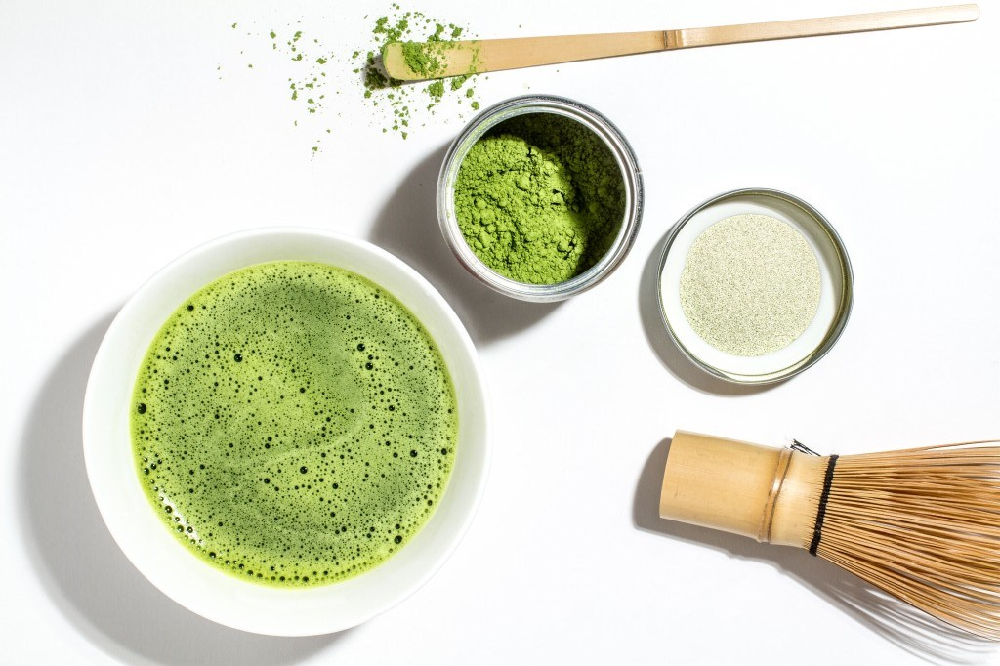
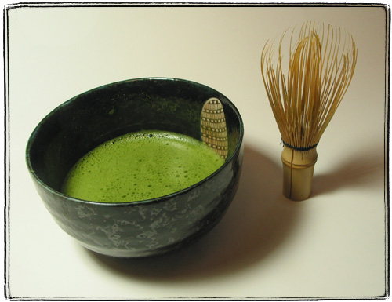
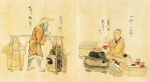
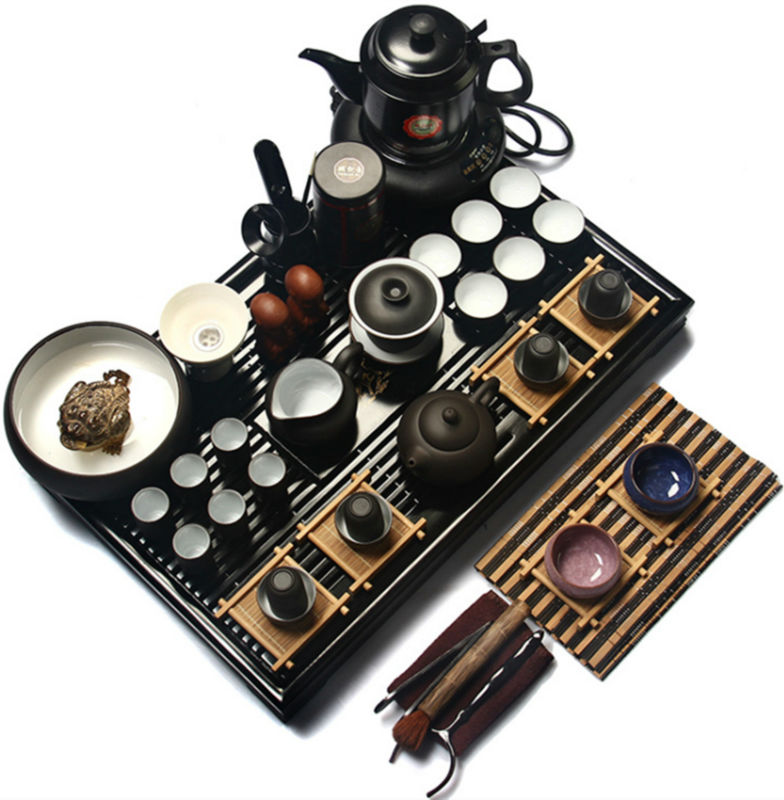
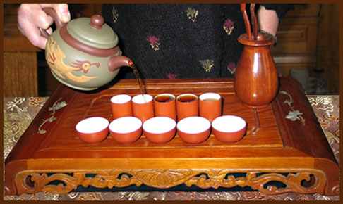
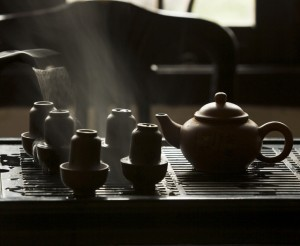

Особливості чайної церемонії
Церемонія приготування чаю є ритуальною формою, яка досі проводиться в країнах Східної Азії. Не просто приготування чи подання, а мистецтво виконання цього процесу й називається чайною церемонією. В кожній країні, зокрема Китаї, Японії та Індії є свої особливості приготування чаю, всюди є свої традиції і цей процес проходить по-різному, але у всіх них одна мета - досягти гармонії людини з природою.
Японська чайна церемонія
У Японії для цього ще в давнину почали будувати спеціальні чайні будиночки в чайних садах. Кімнати в яких проводили ці церемонії називали Тяшіцу. Сад поділяється на зовнішній, який заспокоював і підготовлював до медитації і внутрішній. Сама церемонія, яку ще називають Тядо, Садо або Тяною – це ціла культура, знання, які передавались з покоління в покоління. Зараз відомо три найдавніших основних шкіл де навчають чайної церемонії.
В цілому дана церемонія являється процесом зустрічі господарем (чайним майстром) його гостей і складається з декількох дій виконаних в зазначеному порядку. Чайна церемонія будується на чотирьох основних принципах: гармонія, шанування, чистота, спокій. Тяною – є неймовірним ритуалом гармонії душі й тіла. Завдяки ній розумієш наскільки мала чаша людських радощів і наскільки мудрі ті, хто вміє її заповнити. Саме в чашці чаю можна знайти щось загально людське. Можливо для нас – це просто церемонія, для японців – це релігія.
Зазвичай на чайній церемонії використовують лише зелений чай - матте, а ще багато всього, що потрібно для приготування, починаючи з філіжанок або піалочок і закінчуючи спеціальним посудом для солодощів. Все залежить від того яку саме церемонію ви для себе обрали, адже вони поділяються і по порам року, днях і навіть те, який саме період доби обрано для проведення церемонії. Отже, якщо ви таки вирішили провести у себе вдома чайну церемонію, вам потрібно зробити все в наступному порядку.
- Крок 1
Слід підготувати все, що буде потрібно для проведення церемонії. Посуд, чай, солодощі (вагасі), якщо ви вирішили подавати їх з чаєм. Важливим на цьому етапі досягти гармонії з собою, адже лише так, сповна можна буде насолодитись процесом приготування чаю.
Набір посуду, який використовується для проведення церемонії називається Чабако - Chabako (茶箱). Туди входить чайничок, піалка, спеціальний віничок, савочок, мірна ложечка для чаю та ще кілька предметів.
- Крок 2
Не лише господар дому готується до церемонії. Його гості повинні підготуватись духовно, очистити свої думки й серця та залишити всі турботи позаду. Вони чекають поки господар дому покличе їх на церемонію. Інколи це здійснювалось з допомогою дори (銅鑼) - це спеціальний гонг, який видає дзвінкий та гарний звук при ударі, який означав, що чайний майстер готовий та чекає на гостей.
Господар дому вітає кожного гостя мовчазним поклоном. Спершу подають вагасі, а потім починається чайна церемонія.
- Крок 3
Сам процес починається з очищення столових приборів. Господар очищає піалку, чайник, савок і віник з дуже граційними рухами. Далі йде сам процес приготування чаю.
- Крок 4
Спершу потрібно прогріти піалку гарячою водою, також слід замочити в воді віничок, щоб пилинки чаю не прилипали до нього.
- Крок 5
Господар насипає 1-2 чайних ложки матте в піалку та заливає його гарячою половиною склянки води.
 - Крок 6
Віничком слід спершу розмішати, а потім добре збити матте, щоб він повністю розчинився, а на поверхні чашки появилась пишна піна.
 - Крок 7
Господар передає піалку одному з гостей і вони обмінюються поклонами. Кожен гість захоплюється чаєм і дякує господареві за цей чудовий напій.
Китайська чайна церемонія
Поряд з японською чайною церемонією особливе місце займає китайська церемонія. Вважається, що саме в Піднебесній зародилась традиція проведення чайних церемоній. Тут чай вважають «наймудрішою рослиною». Гунфу-ча, або чайна церемонія покликана розкрити аромат і смак цієї дивовижної рослини. Мир та спокій – обов’язкові умови проведення гуну-ча.
Найважливішим моментом у гуну-ча є правильно вибрана вода. Вона повинна бут мякою з солодкуватим присмаком, тому найкраще підходить джерельна.
Китайська церемонія крок за кроком:
- Крок 1
Підготувати усі потрібні прибори для чаю, а чайний столик прикрашають статуеткою бога. Пара чайних чашок називається чадуй, а чайник – чаху.
 - Крок 2
Закип’ятити воду. Вона вважається готовою лише тоді, коли на поверхні появляються великі бульбашки.
- Крок 3
Потрібно прогріти весь посуд.
- Крок 4
Чай, який обрали для церемонії насипають в спеціальну коробочку – чахе. Потім всі вдихають і насолоджуються його ароматом.
- Крок 5
В чайник засипають сухий чай.
- Крок 6
Процес пробудження чаю. Чайник накривають кришкою та замотують в рушничок, збовтують та розгойдують чайник з боку в бік.
- Крок 7
У чайник наливають гарячу воду. Першу заварку не п’ють, вона використовується для омивання чайного листя.
- Крок 8
Слід підготувати дві чашки: високу (венсябей) – символізує чоловіче начало, яку заповнюють на 3/4 об’єму чаєм та накривають низькою чашкою (чабей), яка символізує жіноче начало.
 - Крок 9
Потім чашки перевертають, і спершу перш ніж скуштувати напій гості насолоджуються його ароматом.
 - Крок 10
Коли першу порцію чаю вип’ють, процес повторюється знову. В середньому чай заварюють від трьох до п’яти разів.
Чай це не просто напій, який допомагає втамувати спрагу, позбутися сонливості та наповнити організм слою. На своїй батьківщині він вважається «божественною блаженною росою», а церемонія його приготування – не просто мистецтво, а процес єднання душ. Чайна церемонія дарує спокій і щастя.